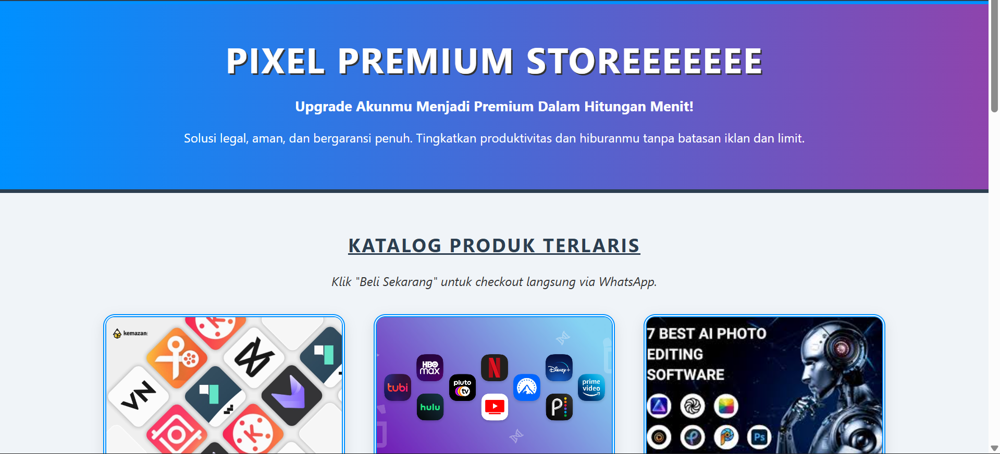
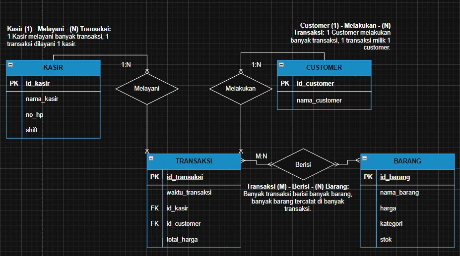
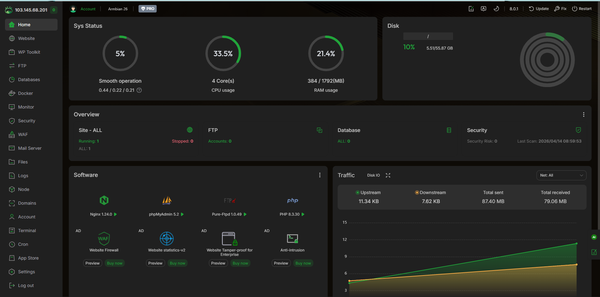
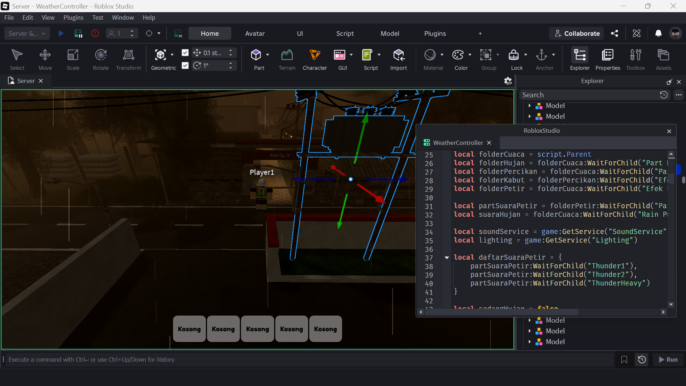
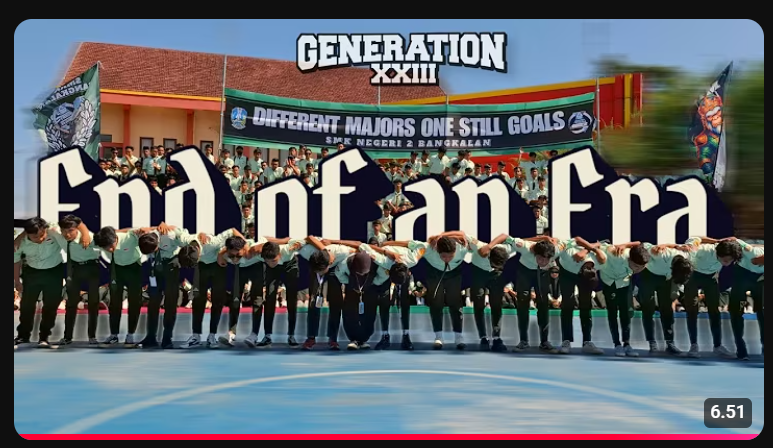

Saya adalah seorang Mahasiswa Sistem Informasi yang suka mengeksplorasi berbagai bidang teknologi. Tidak hanya berfokus pada pengembangan Front-End Web (HTML, CSS, Tailwind), saya juga aktif melakukan praktik langsung dalam perancangan Database (SQL), manajemen Sistem Operasi (Linux), pengembangan logika in-game (Lua), hingga penyuntingan Video & Multimedia.

Perancangan website e-commerce untuk penjualan akun premium yang dibangun menggunakan elemen HTML & CSS murni.
Lihat Detail
Perancangan Entity-Relationship Diagram (ERD) dan struktur database SQL untuk optimalisasi manajemen inventaris kedai kopi.
Lihat Detail
Konfigurasi dan modifikasi perangkat keras STB menjadi mini server fungsional berbasis sistem operasi Armbian Linux.
Lihat Detail
Pengembangan environment interaktif dan logika in-game pada platform Roblox Studio menggunakan bahasa pemrograman Lua.
Lihat Detail
Produksi dan penyuntingan video sinematik angkatan 2025 menggunakan perangkat lunak Filmora 12 dalam kepanitiaan divisi multimedia.
Lihat Detail